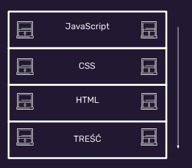

WTF - Tydzień 2
Moje notakti
Warstwy strony internetowej
Stronę internetową mozna porównać do domu jak wspomina o tym Korsan w kursie.
1wsza tzn 0rowa najnizsza warstwa to Treść
Bez treści nie ma strony, nawet ta strona zawiera treść, którą aktualnie nawet czytasz.
Tak to te jest treść trochę o czym i o niczym ale zauwaz ze treść jest wazna
1wsza według numeracji programistycznej to HTML
HTML jest bardzo wazny w tworzenu stron www poniewaz bez niego nie mielibyśmy mozliwosci edycji tresci
2ga warstwa to CSS
Dzięki niemu mozesz zostać malarzem na płutnie którą jest strona internetowa
3cia warstwa to JavaScript
JavaScript to nie Java pamiętaj o tym!
WTF:HTML
Znaczniki poznane w tej lekcji:
- main - to główna część dokumentu
- section - sekcja dokumentu
- article - sekcja która moze istieć samodzielnie - mozna porównać jak w gazecie do artykułu
- header - Nagłówek - domkumentu / sekcji / artykułu
- footer - stopka sekcji / artykułu
- h1-h6 - nagłówki numerowane od najwazniejszego h1 do najmniej waznego h6
- p - odpowiada za paragraf i akapit
WTF:CSS
Anatomia reguły CSS:
selektor{
właściwość:wartość;
}
Rodzaje stylowania CSS
- W znaczniku style ( w head)
- Od razu przy danej czesci kodu html
- W oddzielnym pliku - zalecane najbardziej